--Actividades--
Esta funcionalidad permite realizar la configuración de Actividades necesarias para la gestión de planificación de actividades. Para acceder a estas funcionalidades el usuario debe estar autenticado y debe seleccionar la ruta: Inicio/Planificación/Planificación de actividades/Planeación/ Actividades, ver Figura 1.
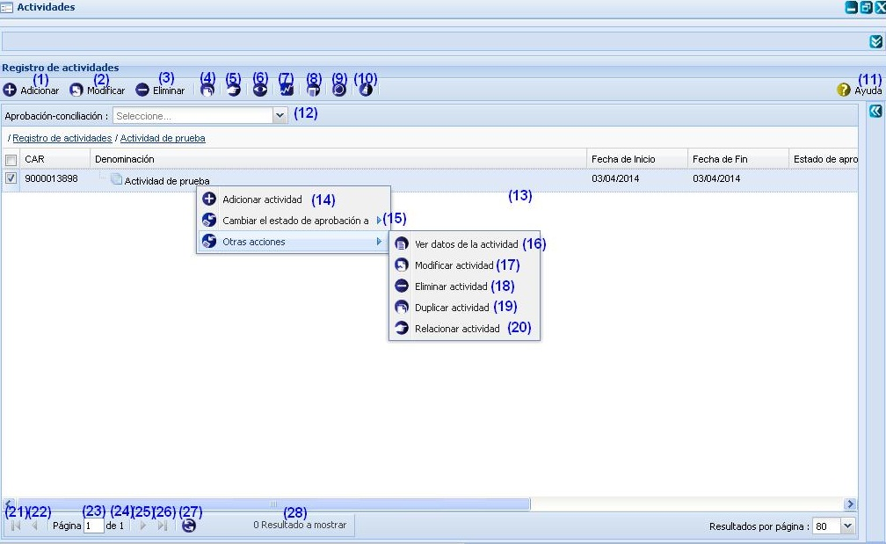
Figura 1. Interfaz y acciones de la funcionalidad Actividades.
Las diferentes opciones que conforman la figura anterior permiten:
- Adicionar una actividad, ver Adicionar una actividad, esta acción permite adicionar una actividad, cuando se presione el botón Aceptar o Aplicar de la interfaz el sistema le mostrará un mensaje de información notificando que se adicionó la actividad satisfactoriamente.
- Modificar una actividad previamente seleccionada en el listado. Una vez invocada a esta acción el sistema le mostrará la interfaz Modificar actividad con los datos de la actividad previamente seleccionada cargados, posibilitando que se modifiquen los datos requeridos. La validación de cada uno de los campos de la interfaz será muy similar al descrito en el Adicionar actividad. En caso de seleccionar la opción Modificar y no hacer cambios en la información referente a la actividad seleccionado se debe mostrar un mensaje. Este botón estará deshabilitado hasta tanto no se haya seleccionado una actividad.
- Eliminar una actividad previamente seleccionada en el listado. Esta acción permite eliminar la(s) actividad(es), una vez seleccionada(s) la(s) misma(s) se procede a seleccionar la opción Eliminar de la interfaz, automáticamente se mostrará un mensaje de confirmación, que se puede Aceptar o Cancelar según sea el caso, de presionar la opción Aceptar el sistema le mostrará un mensaje de información sobre el éxito de la operación realizada, quedando eliminada(s) la(s) actividad(es) seleccionada(s), si cancela el mensaje de confirmación, el sistema permanece en la interfaz principal y no elimina la(s) actividad(es). Inicialmente la opción Eliminar de la interfaz estará deshabilitado hasta tanto no se haya seleccionado al menos una actividad.
- Duplicar actividad, ver Duplicar actividad, esta acción permite duplicar una actividad a partir de una actividad seleccionada. Dicho botón estará deshabilitado hasta tanto no se haya seleccionado una actividad.
- Relacionar actividad(es), ver Relacionar actividad(es), permite establecer relaciones de la actividad con otros elementos de la planificación que se encuentren registrados en el sistema. Este botón estará deshabilitado hasta tanto no se haya seleccionado una actividad.
- Gestionar observaciones a actividad, consultar Gestionar observaciones a actividad referido a la descripción de las operaciones que se pueden realizar con las observaciones. Inicialmente la opción Gestionar observaciones a actividad de la interfaz estará deshabilitado hasta tanto no se haya seleccionado la actividad a gestionar una observación.
- Tributar actividad(es), ver Tributar actividad(es).
- Observar notificaciones generadas, ver Observar notificaciones generadas.
- Búsqueda avanzada, ver Búsqueda avanzada, esta acción permite buscar una actividad entre las actividades adicionadas en el sistema.
- Limpiar filtro(s). Esta acción limpiará todos los criterios de búsqueda, deshabilitando los filtros realizados.
- Mostrar la ayuda de la funcionalidad.
- Aprobación-conciliación. Podrá realizar un filtrado de las actividades que se encuentren en un determinado nivel de aprobación, seleccionando uno de los dos posibles valores de la lista desplegable Aprobación-conciliación: Si o No. Una vez seleccionada la opción, el sistema le muestra en la interfaz 1 aquellos que coincidan con el valor de aprobación y conciliación especificado.
- Se muestra el listado de actividades.
- Adicionar una actividad. Esta acción es similar a la descrita en el punto (1), por lo que la validación y la inserción de cada uno de los campos se realizará como mismo se describe en el Adicionar actividad.
- Cambiar de estado de aprobación. Esta funcionalidad le permitirá cambiar el estado de la actividad, al desglosar esta opción el sistema le mostrará los estados por los que puede pasar la actividad seleccionada. Estos estados son definidos en las funcionalidades: Estados y Transiciones de la información del componente externo Flujo de trabajo.
- Ver datos de la actividad. Esta funcionalidad le permitirá observar los datos de la actividad seleccionada. Estos no podrán ser modificados, son campos de solo lectura.
- Modificar actividad. Esta acción es similar a la descrita en el punto (2), por lo que la validación y la inserción de cada uno de los campos se realizará como se describe en la misma.
- Eliminar actividad. Esta acción es similar a la descrita en el punto (3), por lo que cada una de los pasos a seguir se realizará como se describe en el mismo.
- Duplicar actividad. Esta opción le permitirá duplicar una actividad ya creada, de forma tal que pueda reutilizar los datos necesarios en caso de presentar similitud con otra actividad a insertar. Esta acción es similar a la descrita en el punto (1), por lo que la validación y la inserción de cada uno de los campos se realizará como mismo se describe en el Adicionar actividad.
- Relacionar actividad. Esta acción es similar a la descrita en el punto (5), por lo que cada una de los pasos a seguir se realizará como se describe en el mismo, ver Relacionar actividad.
- Ir a la primera página, mostrando las primeras actividades.
- Ir a la página anterior.
- Mostrar el número de la página donde se encuentra, se puede introducir el número de la página a la que se desea ir.
- Mostrar el número máximo de páginas.
- Ir a la siguiente página.
- Ir a la última página.
- Actualizar el listado de actividades.
- Mostrar la cantidad de resultados encontrados.
Adicionar actividad
Para acceder a esta funcionalidad, se debe presionar el botón Adicionar de la interfaz, ver opción (1) de la figura 1. Una vez invocada a la misma el sistema le mostrará la ventana donde se podrán especificar los datos relacionados con la actividad que se desea adicionar, ver Figura 2.
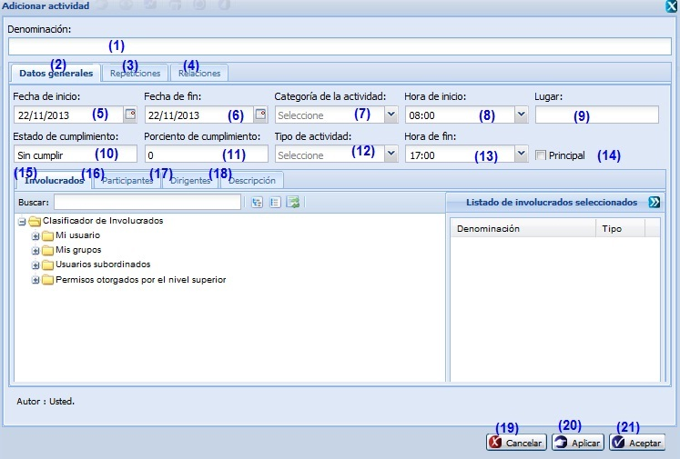
Figura 2. Interfaz Adicionar actividad.
Las opciones de la figura anterior permiten:
- Introducir la denominación de la actividad que desea insertar.
- Seleccionar la pestaña donde se gestionan los datos generales de la actividad.
- Seleccionar la pestaña donde podrá gestionar las veces que desea que se repita la actividad. Para más detalle ver Gestionar repeticiones de la actividad.
- Seleccionar la pestaña donde se podrá establecer relaciones entre la actividad que está adicionando y otros elementos de la planificación. Para más detalle ver Relacionar actividades.
- Seleccionar la fecha de inicio.
- Seleccionar la fecha de fin.
- Seleccionar la categoría de la actividad. Estas categorías son gestionadas en el nomenclador categoría de la actividad, presente en la funcionalidad Nomencladores del componente Configuración.
- Seleccionar la hora de inicio.
- Introducir el lugar de la actividad.
- Mostrar el estado de cumplimiento del objetivo. El dato mostrado en este campo el sistema lo determinará a partir del valor registrado en porciento de cumplimiento.
- Introducir el porciento de cumplimiento que presentará la actividad a insertar.
- Seleccionar el tipo de actividad.
- Seleccionar la hora de fin.
- Marcar si la actividad será Principal.
- Seleccionar la pestaña donde se podrá seleccionar los representantes de las entidades que participarán en la actividad
- Seleccionar la pestaña donde se podrá especificar quienes participarán en la actividad.
- Seleccionar la pestaña donde se podrá especificar quienes serán los dirigentes (responsables) de la actividad.
- Seleccionar la pestaña donde se podrá ingresar la descripción detallada de la actividad.
- Cancelar las acciones y salir de la interfaz sin guardar los datos.
- Guardar los datos y limpiar los campos de la interfaz, permitiendo adicionar otra actividad.
- Adicionar los datos de la actividad al listado y cerrar la interfaz.
Validación de los campos:
- El campo Denominación es obligatorio, en caso de dejar este campo vacío y presionar los botones Aceptar o Aplicar el sistema le notificará el error, subrayando el campo en rojo y mostrando un mensaje de error, al pasar el cursor del mouse por encima del campo subrayado, y el mensaje de error: “Por favor verifique hay campo(s) vacío(s).”. Este campo acepta caracteres alfanuméricos y los caracteres especiales (“%#@!*() _;:,?-.). Al escribir otro tipo de carácter no permitido notificará subrayando el campo en rojo y mostrando el mensaje.
- En el campo Por ciento de cumplimiento solo podrá ingresar números entre los valores de 0 a 100. En caso de que ocurra el sistema debe mostrar el siguiente mensaje: “El valor máximo es de 100.”
- El campo Fecha de inicio y Fecha de fin son obligatorios, en caso de dejar estos campos vacíos y presionar los botones Aceptar o Aplicar el sistema le notificará el error, subrayando el campo en rojo y mostrando un mensaje de error, al pasar el cursor del mouse por encima del campo subrayado, y el mensaje de error: “Por favor verifique hay campo(s) vacío(s).”. Debe considerar que el sistema solo permite seleccionar una fecha de inicio que sea menor o igual que la fecha de fin.
Gestionar repeticiones a la actividad
En la pestaña Repeticiones el sistema permite registrar repeticiones en caso que el usuario desee que la actividad que está adicionando se vuelva a producir. Las repeticiones pueden ser periódicas (cuando el intervalo de repetición es uniforme) o aleatorio (cuando la repetición no es uniforme en el tiempo). Puede realizar la selección en el campo Tipo de repetición, a continuación se activará el botón Adicionar repeticiones, ver Figura 3.
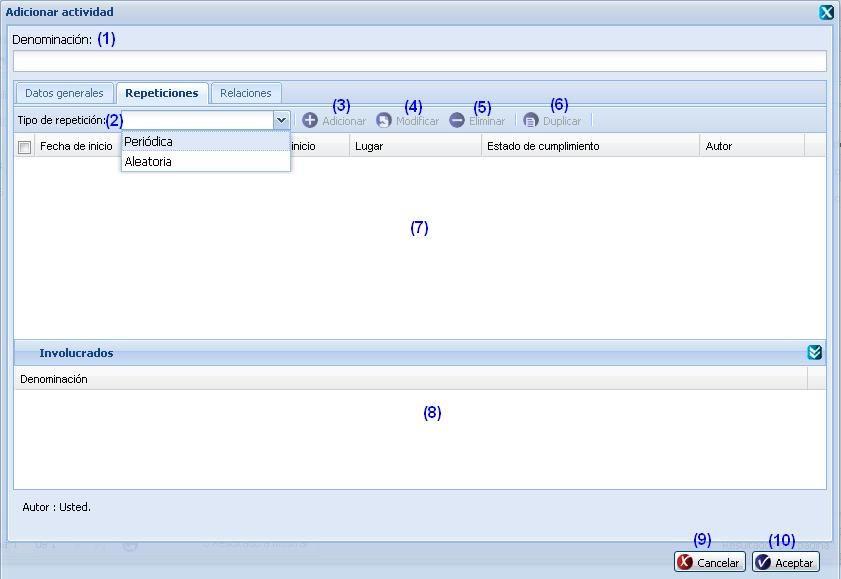
Figura 3. Pestaña repeticiones en la Operación Adicionar actividad.
Las diferentes opciones que conforman la figura anterior permiten:
- Mostrar la denominación de la actividad que se desea insertar en caso de haber escrito alguna denominación o introducir la denominación que presentará la misma.
- Desglosar el campo y seleccionar el tipo de repetición que presentará la actividad a insertar. Esta puede ser de tipo: Periódica o Aleatoria.
- Adicionar repetición. Esta opción se habilitará una vez seleccionado al menos un tipo de repetición, y la interfaz mostrada al invocar la misma variará en dependencia de la repetición seleccionada. Si la repetición es de tipo Periódica el sistema le mostrará la interfaz de la figura 4, y si es de tipo Aleatoria le mostrará la interfaz de la figura 5.
- Modificar una repetición previamente seleccionada. Una vez seleccionada una repetición e invocada esta acción, el sistema le mostrará la interfaz Modificar repetición con los datos cargados, posibilitando que se modifiquen los datos requeridos. Esta opción se habilitará una vez seleccionada una de las repeticiones listadas.
- Eliminar una repetición establecida con anterioridad. Esta acción permite eliminar la(s) repetición(es) deseada(s), una vez seleccionadas las mismas se procede a seleccionar la opción Eliminar de la interfaz, automáticamente el sistema le mostrará un mensaje de confirmación, que se puede Aceptar o Cancelar según sea el caso, de presionar la opción Aceptar el sistema le mostrará un mensaje de información sobre el éxito de la operación realizada, quedando eliminada(s) la(s) repetición(es) seleccionada(s), si cancela el mensaje de confirmación, el sistema permanece en la interfaz principal y no elimina la(s) repetición(es). Inicialmente la opción Eliminar de la interfaz estará deshabilitada hasta tanto no se haya seleccionado al menos una repetición.
- Duplicar repetición, esta acción permite duplicar una repetición ya registrada en el sistema. Dicho botón estará deshabilitado hasta tanto no se haya seleccionado una repetición de las listadas. La interfaz mostrada para la duplicación, independientemente del tipo de repetición seleccionada, será la expuesta en la figura 5.
- Mostrar el listado de repeticiones insertadas.
- Mostrar los involucrados de una repetición. En este panel solo se listarán los involucrados pertenecientes a una repetición previamente seleccionada.
- Cancelar las acciones y salir de la interfaz sin guardar los datos.
- Adicionar los datos de la repetición y cerrar la interfaz.
Nota: Si se encuentra adicionando repeticiones Periódicas debe definir la unidad de tiempo en que se producirán las repeticiones (días o semanas); la periodicidad, que se define registrando el número de repeticiones que se desea que se produzcan. Igualmente deberá determinar la fecha de finalización de la repetición, lo cual puede realizarse si registra la cantidad de repeticiones que se realizarán o si directamente selecciona una fecha en el calendario, ver Figura 4.
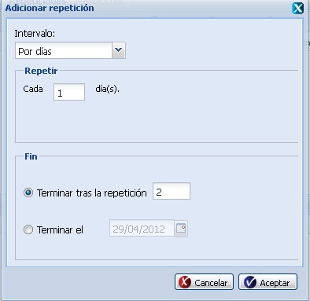
Figura 4. Parámetros solicitados para registrar la repetición periódica.
Las diferentes opciones que conforman la figura anterior permiten:
- Seleccionar el tipo de intervalo por el que se va a generar la repetición.
- Introducir la periodicidad de la repetición a insertar.
- Registrar la cantidad de repeticiones a realizar.
- Seleccionar la fecha de finalización de la actividad.
- Cancelar las acciones y salir de la interfaz sin guardar los datos.
- Adicionar los datos de la repetición y cerrar la interfaz.
Nota: Si desea adicionar repeticiones
Aleatorias, al selecciona este tipo de repetición e invocada a la funcionalidad
Adicionar de la interfaz, el sistema le mostrará la interfaz
Adicionar repetición con cada uno de los datos que se deben tener en cuenta para insertar la misma, ver Figura 5.
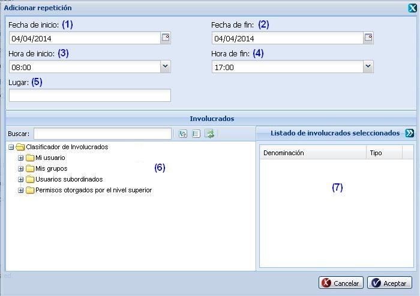
Figura 5. Operaciones con las Repeticiones aleatorias.
Las diferentes opciones que conforman la figura anterior permiten:
- Seleccionar la fecha de inicio que tendrá la repetición a insertar.
- Seleccionar la fecha de fin que tendrá la repetición a insertar.
- Seleccionar la hora de inicio que tendrá la repetición a insertar.
- Seleccionar la hora de fin que tendrá la repetición a insertar.
- Introducir el lugar.
- Seleccionar el(los) involucrado(s) que presentará la repetición a insertar.
- Mostrar los involucrados seleccionador en el clasificador de involucrados (opción 6).
Duplicar actividad
Esta funcionalidad le permitirá reutilizar los datos de una actividad ya insertada en el sistema, para insertar otra que presente características semejantes. Para acceder a esta funcionalidad, se debe presionar la opción (4) de la figura 2. Inmediatamente aparecerá una ventana donde son mostrados los datos correspondientes a la actividad seleccionada y es posible efectuar los cambios de interés, ver Figura 6.
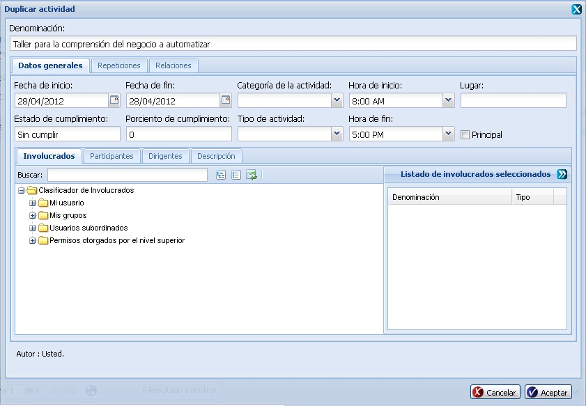
Figura 6. Interfaz duplicar actividad.
Nota: Los nuevos datos introducidos a la hora de duplicar la actividad deben cumplir con las condiciones especificadas para el Adicionar actividad, en caso contrario se mostrarán los mensajes de información en dependencia del error cometido. Si se modifican correctamente los datos deseados, es mostrado un mensaje indicando que se ejecutó correctamente la operación.
Relacionar actividad
Esta funcionalidad le brindará la posibilidad de establecer relaciones de una actividad previamente seleccionada con otros elementos de la planificación que se encuentren registrados en el sistema. Para ello se debe presionar la opción (5) de la figura 2. Inmediatamente el sistema le mostrará una ventana donde se podrán establecer las relaciones, ver Figura 7.
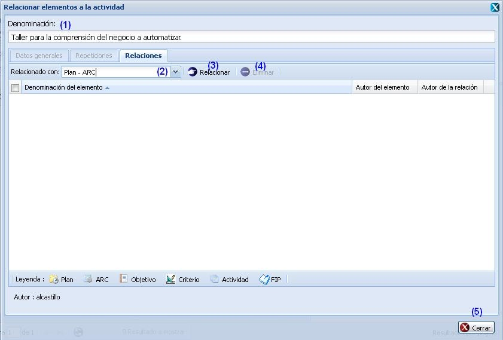
Figura 7. Interfaz Operación Definir el plan al que tributa la actividad.
Las opciones de la figura anterior permiten:
- Mostrar la denominación de la actividad seleccionada.
- Seleccionar de la lista desplegable el tipo de elemento de la planificación con el que se desea relacionar la actividad seleccionada. Una vez seleccionado un elemento de los listados, el sistema le activará el botón Relacionar, opción (3) de la interfaz anteriormente mostrada.
- Mostrar una interfaz con todos los elementos de la planificación registrados en el sistema de acuerdo al tipo de elemento seleccionado en el campo de la opción (2), ver Figura 8. Seleccione el elemento que desee relacionar y presione el botón Seleccionar de dicha la interfaz mostrada. Una vez seleccionado el mismo el sistema le mostrará un mensaje de información indicando que las relaciones fueron insertadas satisfactoriamente. Posteriormente se cerrará la ventana y la nueva relación se mostrará en el panel inferior de la pestaña Relaciones. Oprima el botón Cerrar si no desea efectuar más relaciones.
- Eliminar una relación establecida con anterioridad.
- Oprima el botón Cerrar si no desea efectuar relaciones o una vez establecida la relación.
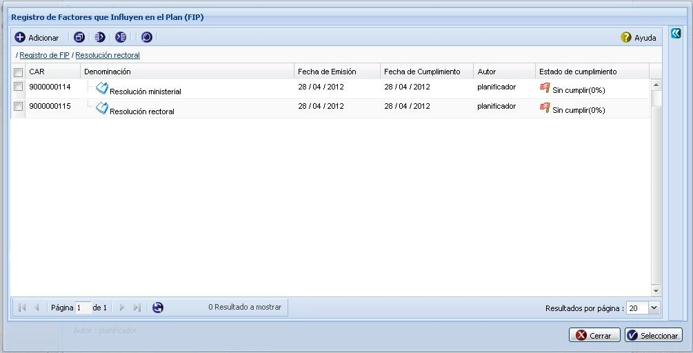
Figura 8. Interfaz Operación Relacionar con FIP.
Nota: es importante tener en cuenta las siguientes observaciones:
-
La interfaz mostrada una vez seleccionada la opción Relacionar de la figura 7, variará en dependencia del elemento de la planificación seleccionado en el campo desglosable Relacionado con.
-
En cada una de las interfaces a mostrar en dependencia del elemento de la planificación seleccionado se podrá efectuar la gestión de los mismos.
Gestionar observaciones
Para ejecutar esta acción debe seleccionar la opción (6) de la figura 2. Una vez seleccionada la misma el sistema le mostrará una ventana donde se podrán especificar los datos relacionados con la actividad que se le desea gestionar una observación, ver Figura 9.

Figura 9. Interfaz Registro de observaciones.
Las diferentes opciones que conforman la figura anterior permiten:
- Adicionar observaciones, ver Adicionar observaciones, esta acción permite adicionar observaciones al objetivo seleccionado.
- Eliminar una observación previamente seleccionada en el listado de observaciones de una actividad. Esta acción permite eliminar la(s) observación(es) deseada(s), una vez seleccionada(s) la(s) misma(s) se procede a seleccionar la opción Eliminar de la interfaz, automáticamente se mostrará un mensaje de confirmación, que se puede Aceptar o Cancelar según sea el caso, de presionar la opción Aceptar el sistema le mostrará un mensaje de información sobre el éxito de la operación realizada, quedando eliminada(s) la(s) observación(es) seleccionada(s), si cancela el mensaje de confirmación, el sistema permanece en la interfaz Registro de observaciones y no elimina la(s) observación(es). Inicialmente la opción Eliminar de la interfaz estará deshabilitada hasta tanto no se haya seleccionado la(s) observación(es) a eliminar.
- Mostrar listado de observaciones del objetivo previamente seleccionado.
- Cuando se presione el botón Cerrar de la interfaz el sistema le mostrará en la actividad seleccionada el campo de Observaciones activo si adicionó alguna observación a la actividad seleccionada.
Adicionar observaciones
Para ejecutar esta acción debe seleccionar la opción (1) de la figura 9. Inmediatamente aparecerá una ventana donde se podrán especificar las observaciones de la actividad, ver Figura 10.
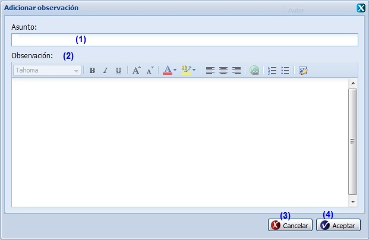
Figura 10. Interfaz Adicionar observación.
Las diferentes opciones que conforman la figura anterior permiten:
- Introducir el asunto de la observación que desea insertar a la actividad previamente seleccionada.
- Introducir la observación de la actividad. Este dato no es obligatorio.
- Cancelar las acciones y salir de la interfaz sin guardar los datos.
- Adicionar los datos de la observación y cerrar la interfaz. El sistema mostrará un mensaje de información notificando que se adicionó la observación a la actividad satisfactoriamente.
Validación de los campos:
- El campo Asunto es obligatorio, en caso de dejar este campo vacío y presionar los botones Aceptar o Aplicar el sistema le mostrará el mensaje de de error: “Por favor verifique que hay campo(s) vacío(s).”, al presionar la opción Aceptar de dicho mensaje del sistema le subrayará el campo en rojo y mostrará un mensaje de error, al pasar el cursor del mouse por encima del mismo. Este campo acepta caracteres alfanuméricos y algunos caracteres especiales (“%#@!*() _;:,?-.). Al escribir otro tipo de carácter no permitido notificará subrayando el campo en rojo y mostrando un mensaje de error. Por último debe saber que no es posible adicionar una nueva observación con el mismo asunto de otra que ya está registrada en el sistema, de suceder esto el sistema le notificará con un mensaje de error.
- El campo Observación puede ser vacío y admite cualquier tipo de caracteres de longitud infinita.
Tributar actividad(es)
Para acceder a esta funcionalidad se debe seleccionar la opción (7) de la figura 2. Inmediatamente el sistema le desglosará una ventana en la parte superior de la interfaz principal que le permitirá relacionar la actividad seleccionada con los diferentes elementos de la planificación que están definidos., ver Figura 11. En este caso se procede a Relacionar actividad(es), ver Relacionar actividad(es).
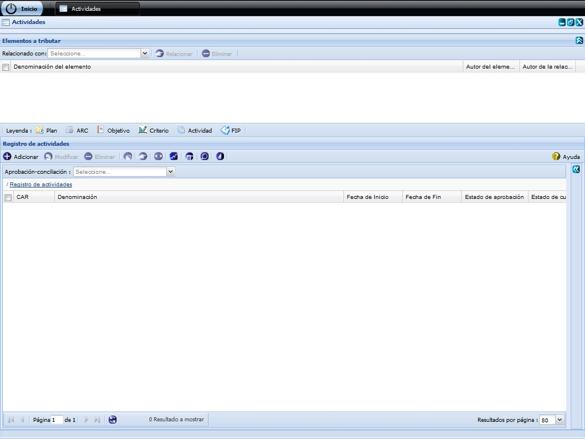
Figura 11. Interfaz Tributar actividad.
Nota: si desea esconder dicha ventana se puede apoyar en la opción (1) de la figura 11, la cual le permitirá habilitar y deshabilitar la ventana en caso requerido.
Observar notificaciones generadas
Para ejecutar esta acción debe seleccionar la opción (8) de la figura 2. Inmediatamente aparecerá una ventana donde se podrán observar las notificaciones generadas, ver Figura 12. Estas notificaciones son generadas automáticamente al cambiar de estado alguna actividad.
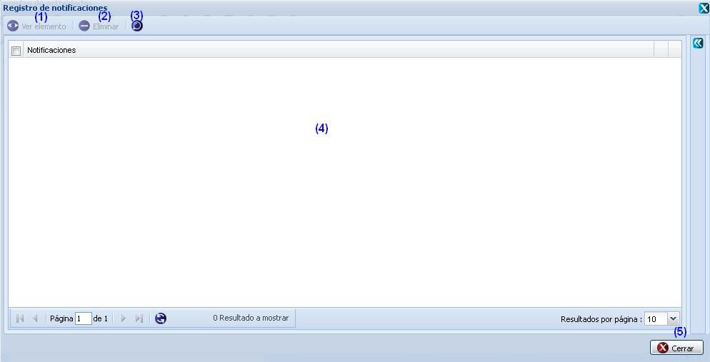
Figura 12. Interfaz bandeja de notificaciones.
Las diferentes opciones que conforman la figura anterior permiten:
- Ver elemento que generó la notificación seleccionada. El botón Ver elemento se activa cuando la notificación seleccionada no es de tipo Eliminado, en otros casos se presiona el botón y se muestran los resultados de la notificación. La ventana que se muestra estará acorde con el elemento de la planificación que sea seleccionado, y los datos mostrados en la misma no podrán ser modificados.
- Eliminar notificación. Una vez ejecuta esta acción el sistema le mostrará un mensaje de confirmación que se puede Aceptar o Cancelar según desee, de presionar la opción Aceptar el sistema le mostrará un mensaje de información sobre el éxito de la operación realizada, quedando eliminada(s) la(s) notificación(es) seleccionada(s). Si presiona la opción Cancelar del mensaje de confirmación el sistema cancela la acción y no elimina la(s) notificación(es) seleccionada(s). Esta opción solo se habilitará una vez seleccionada al menos una notificación de las listadas.
- Realizar una búsqueda avanzada. Esta funcionalidad le permitirá efectuar una búsqueda por autores, para ello el sistema le habilitará el panel derecho opciones de búsqueda, ver Figura 13. Para más detalles ver Búsqueda avanzada.
- Cancelar las acciones y salir de la interfaz sin guardar los datos.
Búsqueda avanzada
Para efectuar una búsqueda avanzada de una actividad en específico, debe seleccionar la opción Búsqueda avanzada de la Figura 1, luego de presionado el mismo, el sistema le mostrará la interfaz Opciones de búsqueda donde tendrá que tener en cuenta los siguientes pasos, ver Figura 13.
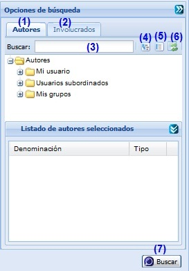
Figura 13. Interfaz Búsqueda avanzada.
Las diferentes opciones que conforman la figura anterior permiten:
- Seleccionar pestaña de Autores.
- Seleccionar pestaña de Involucrados.
- Introducir el criterio de búsqueda para buscar objetivos. Esta acción permite buscar un objetivo en específico a partir del criterio introducido. Luego de introducido el criterio de búsqueda se muestra el autor o involucrado que cumple con los datos especificados. En caso de que no exista un autor o involucrado que coincida con el criterio de búsqueda especificado no se obtendrá ninguna respuesta.
- Expande todos los autores.
- Colapsa todos los autores.
- Refrescar todos los autores.
- Realizar la búsqueda en el árbol de autores o involucrados en dependencia de la pestaña seleccionada.